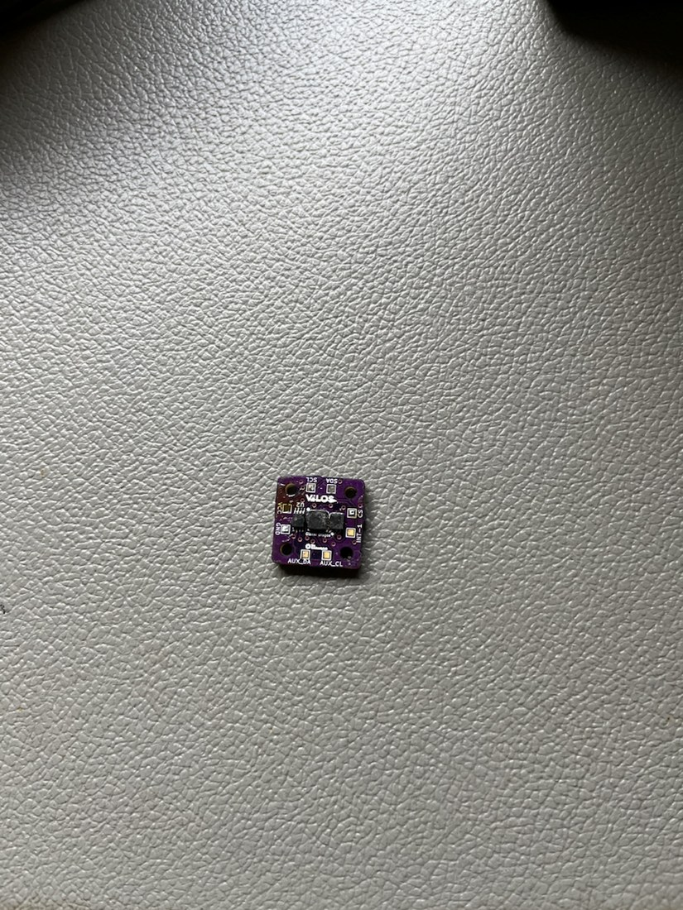
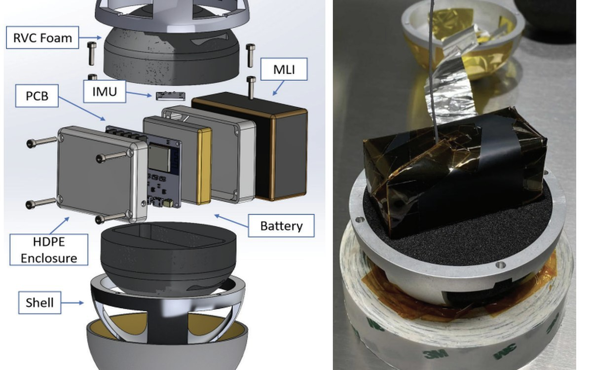
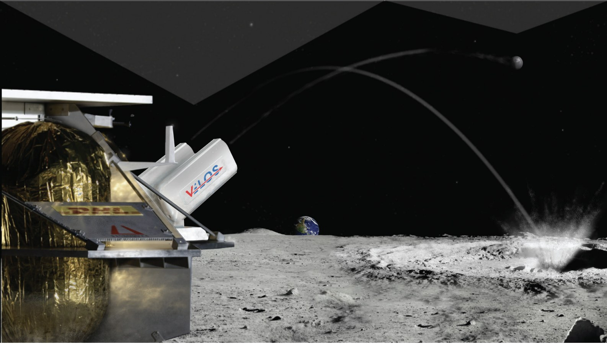

Luminosity Lab / VELOS
Variable Exploratory Lunar Observation System Probe
Lunar sensor probe electronics work focused on IMU integration and a data-transfer interface for the probe daughterboard.
My work
IMU integration and daughterboard data access.
- Role: IMU integration and daughterboard interface work
- Focus: inertial sensing, FTP server, test data access
- Artifacts: IMU hardware, probe CAD, prototype wiring, technical paper
My contribution focused on the IMU portion of the probe electronics. I worked with the inertial measurement hardware used to capture acceleration and orientation-related data during launch, impact, and probe operation.
I also developed an FTP server to interface with the daughterboard, giving the system a practical way to access and transfer data from the probe electronics during development and test workflows. That interface work helped connect the physical sensor board to a usable data path for debugging and validation.
Open technical paperPhotos
Probe hardware and system context.




